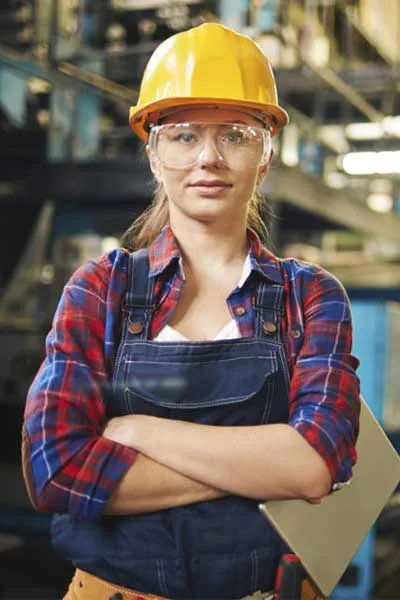

Tentang Kami

Profil Perusahaan
Mitra Industri yang Tumbuh Bersama Klien
Industro berawal dari bengkel fabrikasi kecil pada tahun 2001 dengan satu tekad: memberikan pekerjaan teknik yang jujur, rapi, dan dapat diandalkan. Seiring waktu, kepercayaan pelanggan membawa kami berkembang menjadi perusahaan jasa industri terpadu dengan lebih dari seratus tenaga ahli dan ribuan proyek yang telah diselesaikan.
Hari ini kami melayani pabrik manufaktur, perusahaan energi, pengolahan pangan, hingga kawasan industri. Apa pun skalanya, prinsip kami tetap sama: keselamatan nomor satu, mutu tidak ditawar, dan komunikasi terbuka dari awal sampai akhir proyek.
- Tenaga ahli bersertifikat dan berpengalaman lintas sektor
- Peralatan kerja modern dan terawat
- Laporan progres transparan dan dokumentasi lengkap
- Layanan purna jual dan dukungan teknis berkelanjutan
Dipercaya ratusan klien untuk pekerjaan yang menuntut ketelitian tinggi dan standar keselamatan ketat.
Visi & Misi
Arah yang Memandu Setiap Pekerjaan Kami
Visi
Menjadi perusahaan jasa industri terpadu pilihan utama di Jawa Tengah yang dikenal karena keandalan, keselamatan kerja, dan hasil pekerjaan yang bernilai jangka panjang bagi klien.
Misi
- Menghadirkan solusi teknik yang tepat guna, efisien, dan sesuai standar.
- Menerapkan budaya K3 dan kepedulian lingkungan di setiap proyek.
- Mengembangkan kompetensi karyawan dan mitra secara berkelanjutan.
- Membangun hubungan jangka panjang berdasarkan kejujuran dan kepercayaan.
Nilai Perusahaan
Enam Nilai yang Kami Jaga
Keselamatan
Tidak ada pekerjaan yang lebih penting daripada keselamatan manusia.
Integritas
Jujur dalam penawaran, jujur dalam laporan, dan menepati komitmen.
Profesionalisme
Bekerja dengan metode, disiplin, dan dokumentasi yang rapi.
Kolaborasi
Klien adalah mitra; kami bekerja sebagai satu tim.
Inovasi
Terus mencari cara kerja yang lebih efisien dan ramah lingkungan.
Tanggung Jawab
Kami tuntaskan pekerjaan hingga serah terima dan garansi.
Sejarah Kami
Perjalanan 25 Tahun Industro
Awal Perjalanan
Berdiri sebagai bengkel fabrikasi dan jasa las dengan 8 karyawan, melayani pabrik-pabrik di sekitar Cilacap.
Menjadi Perseroan Terbatas
Berbadan hukum PT dan memperluas layanan ke pekerjaan sipil serta perpipaan industri.
Sertifikasi Sistem Mutu
Menerapkan sistem manajemen mutu dan mulai dipercaya mengerjakan proyek untuk perusahaan skala nasional.
Divisi Energi & Kelistrikan
Membentuk divisi kelistrikan industri dan genset, melengkapi layanan terpadu bagi pabrik.
Budaya K3 Terintegrasi
Menerapkan sistem manajemen K3 menyeluruh dan mencapai jutaan jam kerja aman.
Era Energi Terbarukan
Meluncurkan layanan PLTS atap dan audit efisiensi energi untuk industri.
Terus Bertumbuh
Lebih dari 135 profesional dan 1.800 proyek, siap melayani kebutuhan industri generasi berikutnya.

K3 & Lingkungan
Keselamatan Bukan Slogan, Tapi Kebiasaan
Setiap pekerja Industro mengikuti induksi keselamatan sebelum masuk lokasi. Kami menerapkan izin kerja (work permit), analisis keselamatan pekerjaan (JSA), serta inspeksi harian oleh petugas K3.
- Rencana K3 (HSE Plan) untuk setiap proyek
- Pelatihan kerja di ketinggian, ruang terbatas, dan pengelasan
- Pengelolaan limbah B3 dan material sesuai ketentuan
- Evaluasi dan pelaporan insiden terbuka demi perbaikan
Sertifikasi & Legalitas
Kredibilitas yang Bisa Diverifikasi
ISO 9001
Sistem manajemen mutu
ISO 45001 / SMK3
Keselamatan & kesehatan kerja
ISO 14001
Manajemen lingkungan
SBU & SIUJK
Izin usaha jasa konstruksi
Mari Bangun Kerja Sama yang Saling Menguntungkan
Kami terbuka berdiskusi, baik untuk proyek besar maupun kebutuhan perawatan rutin. Hubungi kami hari ini.